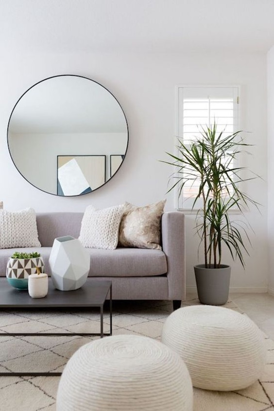
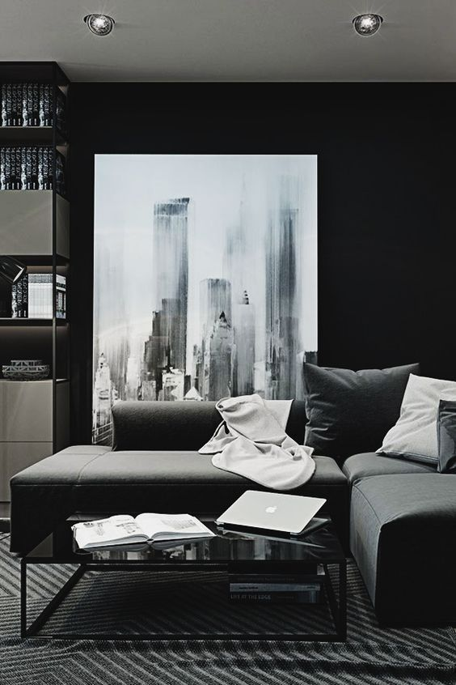

PROJECTS
Scandinavian
Kitchen
Scandinavian-style kitchens are all about a seamless blend of form and functionality wrapped in an inviting ambiance.

Minimalistic yet beautifully one-dimensional, a predominantly all-white colour palette is the key to achieving the Scandi look in your home. But what if you want to apply this look to your kitchen, the hardest working room in the home? Using white in the right way can make your space appear brighter, lighter and all round much more sophisticated.
When I think of modern kitchen designs I think of frameless cabinets, sleek and simple hardware, strong horizontal lines and a lack of ornamentation, with the natural beauty of the materials shining through.
Modern
Kitchen
The key to modern design is a clean, uncluttered feel to work surfaces. The latest composites are perfect for contemporary kitchens as their colour and any pattern are consistent and choice has grown over the past few years to include everything from pure brilliant white to zingy orange. Modern kitchens really are about clean lines, and that goes for appliances, too.
The Scandinavian living room holds a sleek and clean look due to the strictly white color scheme with pops of specific bright color or contrasting tone so the interior has a sharp and dynamic effect.
-

- 
-

Scandinavian
Living
Area
It’s very easy to recognize a Scandinavian interior design. But there isn’t just one Scandinavian style but several and they all have certain elements in common. For example, all Scandinavian interiors have wooden floors, most often light and they can be seen in all the rooms apart from the bathroom. The color palette in Scandinavian decors is very light and simple and it usually includes shades of gray and blue as well as a lot of white. Sometimes bold touches of color can be seen here and there.
There is a belief that modern living rooms are cold and lack personality but nothing could further from the truth. Modern living rooms can be warm, inviting, and sometimes, even downright cozy.
- 
-

Modern
L iving
Area
Most modern living rooms have an open floor plan and are connected to areas such as the kitchen or the dining room. This allows them to feel open, bright and spacious. The spaces are often visually delimitated but without using walls. The focus in modern living rooms is on comfort and simplicity. So a sofa or a sectional is, first of all, very comfortable but also modular and space-efficient in most cases.
Scandinavian
Bedroom
A Scandinavian-style bedroom is simple, tranquil, bright and relaxing. It's a well known fact that most Scandinavian-inspired interiors use white as a main color.

The Scandinavian bedroom is a thing of beauty. Cool but cosy, minimalist but characterful, clean but rustic, these are spaces aren't all that hard to achieve. Scandinavian bedrooms are all about texture. Crumpled linens, layers of blankets, piles of pillows, and wood elements create the perfect mix of textures that add dimension and warmth to the bedroom.
A modern bedroom may sound cold and sterile, but the results are often incredibly inviting.
Modern
bedroom
With the right elements—including vibrant colors, soft textures, and warm wood furnishings—modern design can feel right at home in a master suite or guest room. These tranquil retreats take advantage of natural light for a bright and airy feel and pare down furnishings to the essentials to create an uncluttered spot for relaxation.